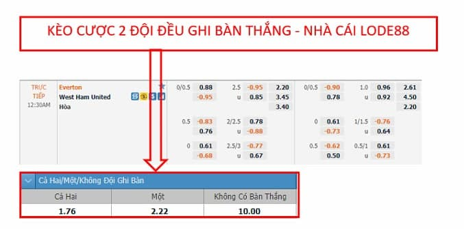
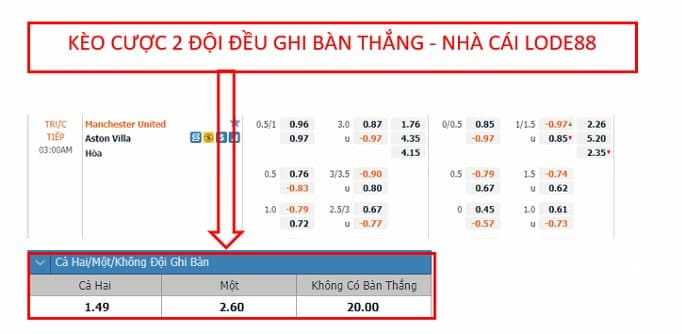
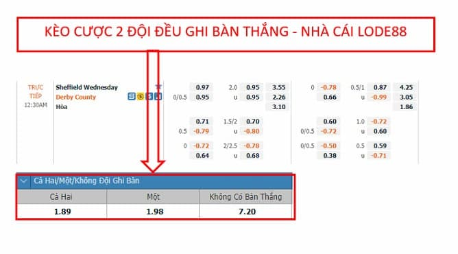

Kèo cược cả 2 đội có bàn thắng (Both Teams To Score) là gì?
Nhà cái ra kèo cược cả 2 đội có bàn thắng hay còn được biết đến với tên gọi viết tắt là BTTS (Both Teams To Score) là một loại kèo tương đối phổ biến với dân cá cược. Đây là một loại kèo mà người chơi sẽ dự đoán xem 2 đội cùng có bàn thắng trong một trận đấu hay không. Kèo cược cả 2 đội có bàn thắng (Both Teams To Score) là một kèo cược đơn giản và dễ hiểu.
Kèo cược cả 2 đội có bàn thắng (Both Teams To Score) có 3 lựa chọn:
- Cả hai: Nghĩa là cả 2 đội bóng đều sẽ ghi được bàn thắng trong trận đấu này.
- Một: Chỉ một đội bóng ghi bàn trong trận đấu này, đội còn lại không ghi được bàn thắng nào.
- Không: Nghĩa là cả 2 đội bóng đều không ghi được bàn thắng nào trong trận đấu này.
Lưu ý: Người chơi đừng nhầm lẫn đến kèo tổng số bàn thắng thì ở kèo cược cả 2 đội có bàn thắng người chơi không cần quan tâm đến số lượng bàn thắng có trong trận đấu mà chỉ cần nhận định về khả năng ghi bàn của 2 đội.
Cách tính kèo cược 2 đội bóng đều ghi bàn (Both Teams To Score).
Tiền thắng kèo = Số tiền đặt cược x tỷ lệ cược kèo cược 2 đội bóng đều ghi bàn (Both Teams To Score).
3 Ví dụ cụ thể kèo cược 2 đội bóng đều ghi bàn (Both Teams To Score) (mức cược 100 usd)
Kèo CƯỢC 2 ĐỘI BÓNG ĐỀU GHI BÀN (BOTH TEAMS TO SCORE) TRẬN EVERTON VS WEST HAM UNITED

Trận đấu diễn ra trong khuôn khổ giải bóng đá Ngoại Hạng Anh - Premier League giữa Everton vs West Ham United. Kèo cược 2 đội bóng đều ghi bàn được thể hiện như hình. Cược cả 2 đội đều ghi bàn có tỷ lệ ăn là 1.76, cược một đội ghi bàn có tỷ lệ ăn là 2.22, không đội nào ghi bàn là 10. Chọn mức cược của trận này là 100 usd.
- Nếu người chơi cược cả 2 đội bóng có bàn thắng mà trận đấu kết thúc mà 2 đội đều ghi được bàn thì người chơi nhận được số tiền là: 100 x 1.76 = 176 usd.
- Nếu người chơi cược chỉ có 1 đội ghi bàn mà trận đấu kết thúc mà chỉ có 1 đội ghi bàn (1-0,2-0,..) thì người chơi nhận được số tiền là: 100 x 2.22 = 222 usd.
- Nếu người chơi cược không đội nào ghi bàn mà trận đấu kết thúc với tỷ số 0-0 thì người chơi nhận được số tiền là: 100 x 10 = 1000 usd.
Kèo CƯỢC 2 ĐỘI BÓNG ĐỀU GHI BÀN (BOTH TEAMS TO SCORE) TRẬN MANCHESTER UNITED VS ASTON VILLA

Trận đấu diễn ra trong khuôn khổ giải bóng đá Ngoại Hạng ANh - Premier League giữa Manchester United vs Aston Villa. Kèo cược 2 đội bóng đều ghi bàn được thể hiện như hình. Cược cả 2 đội đều ghi bàn có tỷ lệ ăn là 1.49, cược một đội ghi bàn có tỷ lệ ăn là 2.6, không đội nào ghi bàn là 20. Chọn mức cược của trận này là 100 usd.
- Nếu người chơi cược cả 2 đội bóng có bàn thắng mà trận đấu kết thúc mà 2 đội đều ghi được bàn thì người chơi nhận được số tiền là: 100 x 1.49 = 149 usd.
- Nếu người chơi cược chỉ có 1 đội ghi bàn mà trận đấu kết thúc mà chỉ có 1 đội ghi bàn (1-0,2-0,..) thì người chơi nhận được số tiền là: 100 x 2.6 = 260 usd.
- Nếu người chơi cược không đội nào ghi bàn mà trận đấu kết thúc với tỷ số 0-0 thì người chơi nhận được số tiền là: 100 x 20 = 2000 usd.
Kèo CƯỢC 2 ĐỘI BÓNG ĐỀU GHI BÀN (BOTH TEAMS TO SCORE) TRẬN SHEFFIELD WEDNESDAY VS DERBY COUNTY

Trận đấu diễn ra trong khuôn khổ giải bóng đá hạng hai bóng đá Anh - Championship giữa Shieffield Wednesday và Derby County. Kèo cược 2 đội bóng đều ghi bàn được thể hiện như hình. Cược cả 2 đội đều ghi bàn có tỷ lệ ăn là 1.89, cược một đội ghi bàn có tỷ lệ ăn là 1.98, không đội nào ghi bàn là 7.2. Chọn mức cược của trận này là 100 usd.
- Nếu người chơi cược cả 2 đội bóng có bàn thắng mà trận đấu kết thúc mà 2 đội đều ghi được bàn thì người chơi nhận được số tiền là: 100 x 1.89 = 189 usd.
- Nếu người chơi cược chỉ có 1 đội ghi bàn mà trận đấu kết thúc mà chỉ có 1 đội ghi bàn (1-0,2-0,..) thì người chơi nhận được số tiền là: 100 x 1.98 = 198 usd.
- Nếu người chơi cược không đội nào ghi bàn mà trận đấu kết thúc với tỷ số 0-0 thì người chơi nhận được số tiền là: 100 x 7.2 = 720 usd.
![time]()